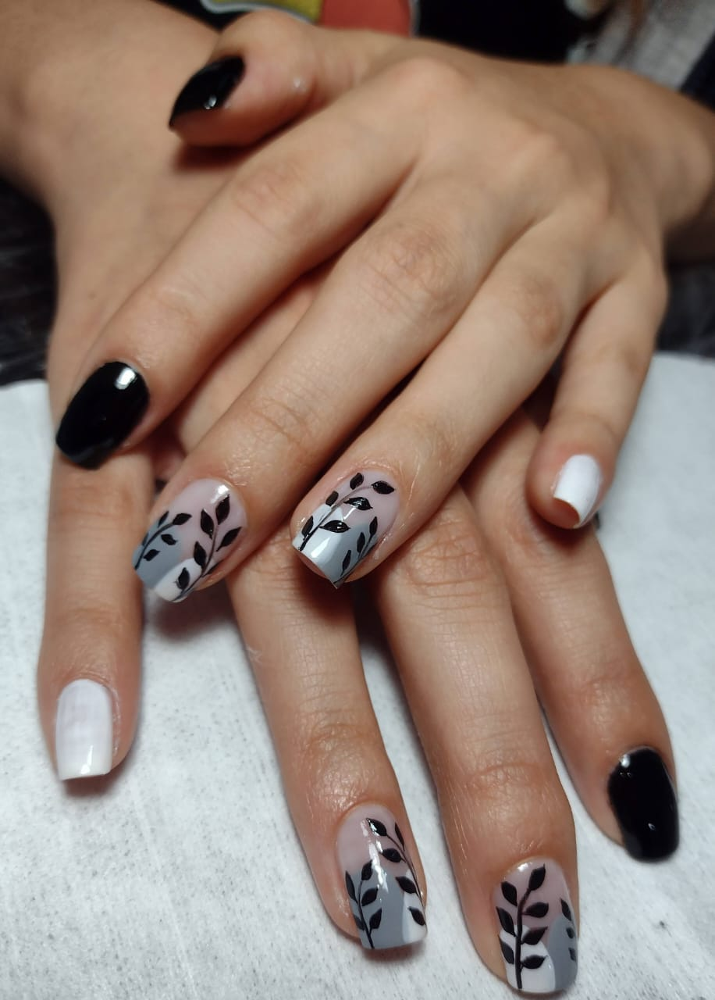
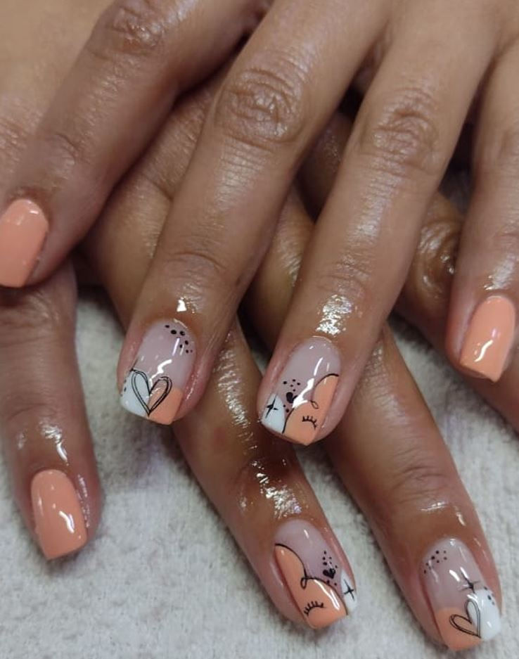
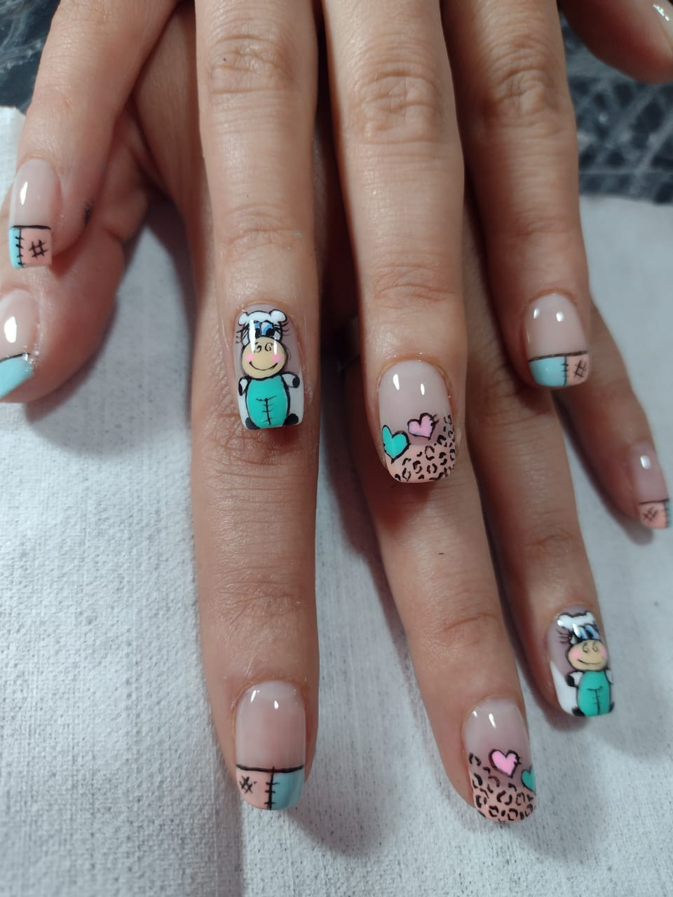
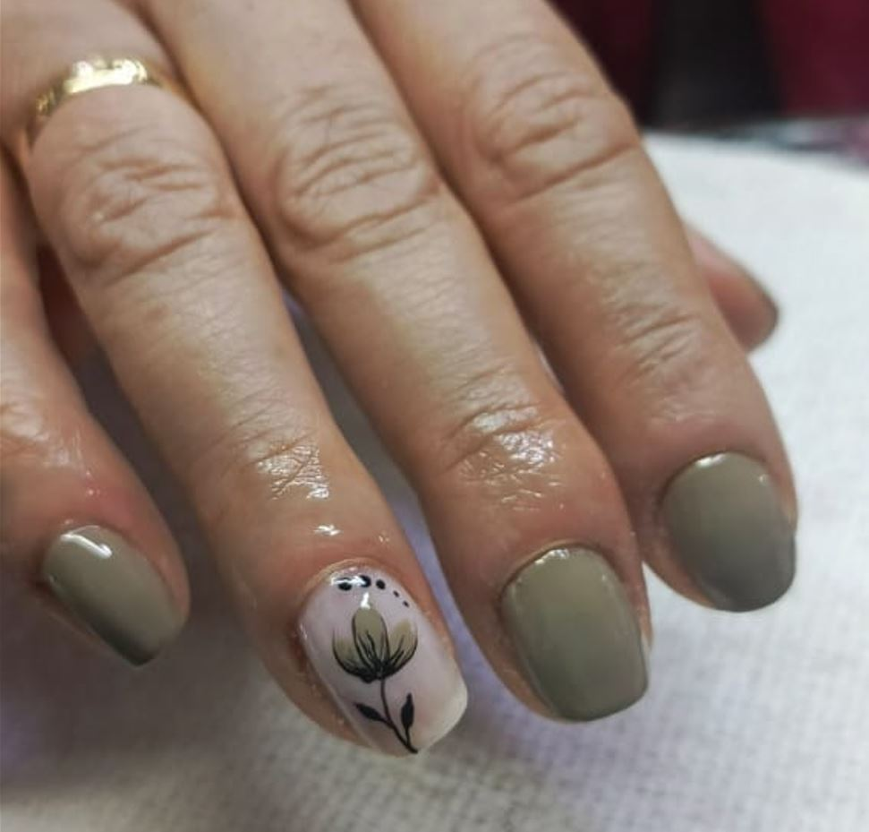

Cuidado y estilo profesional especializado para consentir las manos de las más pequeñas

Esmaltado de larga duración con productos seguros, libres de tóxicos y pensados especialmente para cuidar las uñas infantiles, ofreciendo un acabado brillante y colorido que perdura por más tiempo.

Uñas postizas diseñadas a medida, fáciles de poner y retirar sin maltratar la uña natural. Ideales para eventos especiales, fiestas o para lucir un diseño divertido por un corto periodo.

Una capa protectora de acrílico aplicada sobre la uña natural para brindar mayor resistencia, evitar que se quiebren y mantenerlas cuidadas con un aspecto impecable y natural.

Innovadora técnica que combina lo mejor del acrílico y el gel. Es un material ligero, flexible y sumamente seguro, perfecto para dar forma y proteger las uñas con un acabado ultra natural.